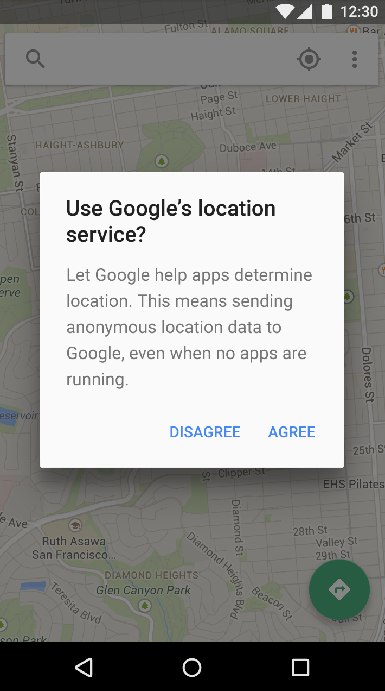
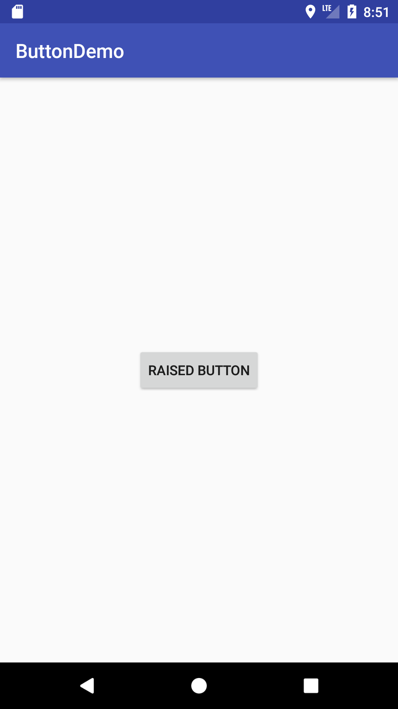
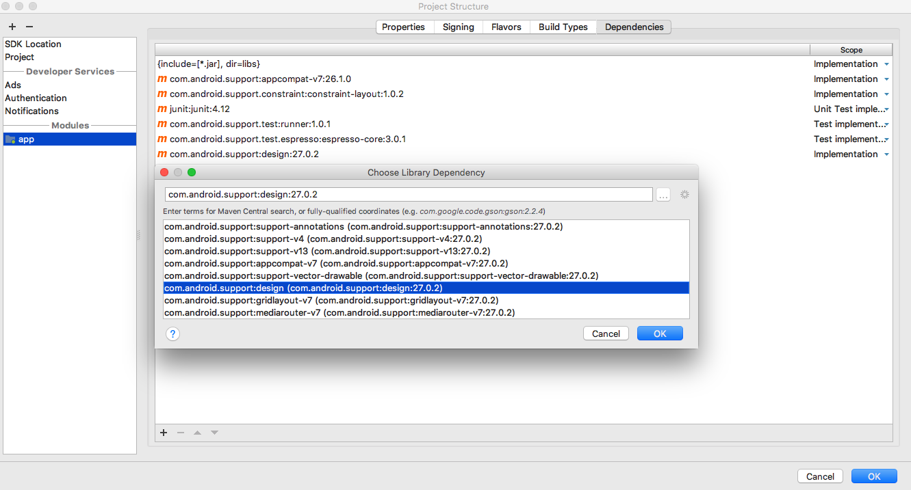
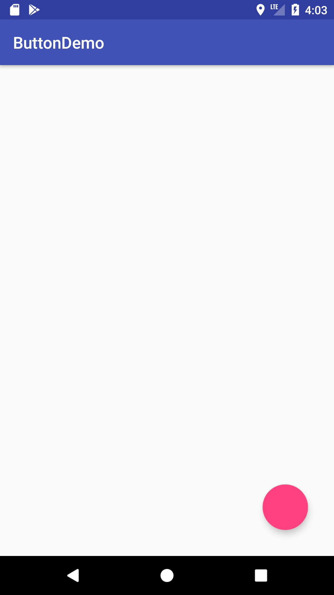
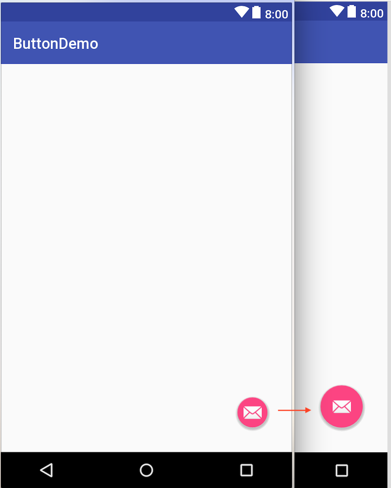

Introduction
在Material Design中，Button 共分為三類
Raised button
凸起式按鈕，按下去會有一個下壓的效果
Flat button
平面按鈕，也稱作純文本按鈕，並沒有像Raised buttons一樣，有下壓效果，常用於 dialog、toolbar中

Floating button
顧名思義就是浮著的Button，在設計上通常一個介面只會存在一個，代表此頁最常見的功能鈕
接下來我們來看看在Android裡如何實現。
Create a Raised button
使用Raised buttons很容易，只要在 layout 裡直接引用AppConpact Library裡的，具有Material features 的 AppCompatButton 就可以了
layout:
1 | <android.support.v7.widget.AppCompatButton |
運行效果如下：

如何更換AppCompatButton的按鈕顏色呢？
首先打開sytles.xml文件，在裡面創建一個 new style 定義背景及文字顏色
styles.xml:
1 | <resources> |
接著再回到 layout 文件的AppCompatButton中，設定剛剛新增的 style
layout:
1 | <android.support.v7.widget.AppCompatButton |
運行效果如下：
Create a Flat button
創建Flat button也很容易，打開sytles.xml文件，在裡面創建一個 new style，Widget.AppCompat.Button.Borderless 表示你的按鈕背景為透明，當然你也可以在style裡，定義文字的顏色
styles.xml:
1 | <resources> |
接著創建一個AppCompatButton，把sytle設定進去就好
layout:
1 | <android.support.v7.widget.AppCompatButton |
運行效果如下：
Create a Floating Action Button
接下來我們來創建Floating Action Buttonn，首先要先確認Design Library有加進我們的Project

之後就可以在 layout 裡直接引用了
layout:
1 | <android.support.design.widget.FloatingActionButton |
運行效果如下：

你也可以在Floating Action Buttonn中，添加icon
layout:
1 | <android.support.design.widget.FloatingActionButton |
運行效果如下：
設定Floating Action Buttonn的size
以 size 可分為:
1.noraml circle = 56x56dp
2.Mini circle = 40x40dp
layout:
1 | <android.support.design.widget.FloatingActionButton |
運行效果如下：

Floating Action Buttonn還有一個很符合此命名的屬性 elevation
其中 elevation 設定的 DP 越大，則按鈕背後的陰影也會越大
layout:
1 | <android.support.design.widget.FloatingActionButton |
運行效果如下：
Floating Action Buttonn的背景顏色預設是**@color/colorAccent**，如果想要自訂背景顏色，只要改變屬性:backgroundTint就可以了
layout:
1 | <android.support.design.widget.FloatingActionButton |
運行效果如下：
參考網站:
Android Developer
Material Design Buttons
Material Design Buttons: Floating Action Button